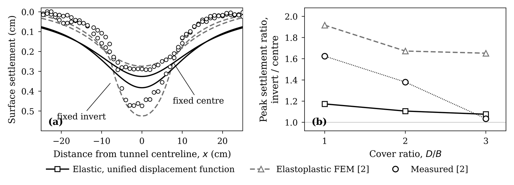
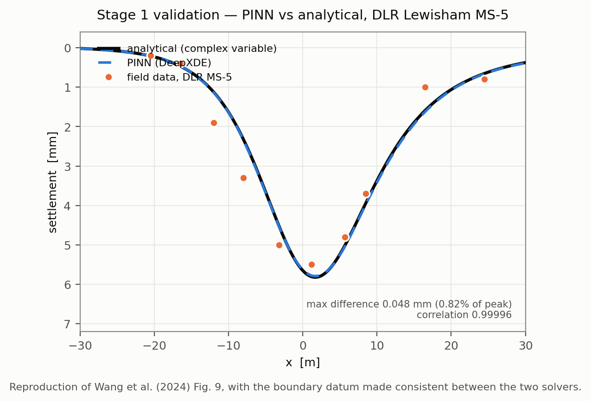

Research & Thesis
Undergraduate thesis
Forward prediction of tunnelling-induced settlement: a unified displacement function and a physics-informed neural network validated against controlled model tests
The problem. Settlement above a tunnel is still predicted with Peck's empirical Gaussian curve, which describes the trough with a single ground loss ratio. That assumes the surface only responds to how much soil is lost, not to how the tunnel cross-section deforms. Shahin et al.'s model tests show the assumption is unsafe for shallow tunnels: two excavation patterns imposed at the same 15.36% ground loss produced markedly different troughs. Later analytical and machine-learning treatments fixed this by describing the tunnel-wall movement as a truncated Fourier series — the unified displacement function — but in every case the coefficients were recovered by back-fitting a measured trough. The prediction had never been tested where the wall movement was independently known.
What I did. I took the unified displacement function, which writes the radial movement of the tunnel wall at polar angle θ′ as five independent modes,
ur = −u₀ + a₁′ sin θ′ + b₁′ cos θ′ + a₂′ sin 2θ′ + b₂′ cos 2θ′
where u₀ is uniform convergence, a₁′ and b₁′ are vertical and horizontal translation, and a₂′, b₂′ are ovalisation — and applied it to a case where the coefficients are set by the apparatus rather than fitted. Shahin's tests contracted a 10 cm two-dimensional tunnel in aluminium rods with a tapered shim, so the wall movement was imposed. The two patterns are exactly two UDF modes: fixed-centre is uniform shrinkage, uᵣ = −u₀; fixed-invert additionally lowers the device, giving uᵣ = −u₀(1 + sin θ′). That makes the comparison a genuine out-of-sample forward prediction.
The elastic half-plane was solved by the complex variable method — a conformal map of the half-plane-with-hole onto an annulus, Laurent-series potentials and least-squares collocation on the tunnel wall, with rigid-body motion removed. Maximum boundary residual was 10⁻¹⁴, and the published field case was reproduced to within 0.02 mm. I then rebuilt the physics-informed neural network in DeepXDE as mixed first-order elasticity with five outputs (uₓ, u_y, σₓₓ, σ_yy, σₓ_y). Two measures the source paper does not report turned out to be necessary to make it converge: non-dimensionalising the lengths, and grading the collocation points logarithmically towards the tunnel wall. Cover ratios D/B = 1, 2 and 3 were analysed at ν = 0.33.
What I found.
| D/B | Pattern | Measured (cm) | UDF (cm) | FEM (cm) | R² UDF | R² FEM |
|---|---|---|---|---|---|---|
| 1 | Fixed centre | 0.292 | 0.326 | 0.274 | 0.47 | 0.89 |
| 1 | Fixed invert | 0.474 | 0.383 | 0.526 | 0.67 | 0.92 |
| 2 | Fixed centre | 0.229 | 0.202 | 0.193 | 0.26 | 0.82 |
| 2 | Fixed invert | 0.316 | 0.224 | 0.323 | 0.50 | 0.82 |
| 3 | Fixed centre | 0.176 | 0.146 | 0.123 | 0.28 | 0.62 |
| 3 | Fixed invert | 0.182 | 0.157 | 0.203 | 0.25 | 0.66 |
For the fixed-centre pattern the elastic solution predicts the peak to within 12%. The fixed-invert pattern is systematically under-predicted, and the reason is visible in the trough shape: the elastic trough is 1.6 to 2.1 times wider than measured, because linear elasticity cannot localise deformation into a shear band. The fitted width parameter i/h was 0.37–0.57 for the measurements — the usual range for sand — against 0.72–0.92 for the elastic solution. Over all six cases the UDF explains 41% of the measured variance, against 79% for an elastoplastic analysis. An empirical width correction, one scale factor and one width factor, raises the mean R² from 0.41 to 0.91.
The effect that motivated the study survives: the measured sensitivity to excavation pattern — peak settlement of one pattern over the other at identical ground loss — falls from 1.63 at D/B = 1 to 1.04 at D/B = 3. The elastic UDF reproduces that trend qualitatively but captures only about 28% of its magnitude at shallow cover, while the elastoplastic analysis errs the other way and over-predicts it at every cover.

On the PINN: with the wall coefficients held fixed and the analytical far field prescribed, it solves the boundary value problem to within 0.77% of peak settlement. That validates the solver — it is not evidence that the coefficients can be recovered from surface measurements, which is a separate and harder inverse problem.

Why it matters. Ground loss alone is not enough to predict settlement above a shallow tunnel, and an elastic forward model tells you the peak but not the width. The practical reading is that the analytical route is usable for a first estimate of magnitude at moderate cover, and needs a width correction — calibrated to soil, not to the tunnel — before it can be trusted near the surface where buildings actually sit.
Status: [In progress — defending in Month Year]. An extended abstract from this work has been submitted to the International Conference on Civil Engineering (ICCE 2026), Dhaka, 17–19 December 2026, and is under review. Thesis PDF, slides and the analysis code will be posted here.
Methods and tools I use
- Numerical modelling — PLAXIS 3D and PLAXIS 2D (foundations, tunnelling), finite element analysis to failure
- Analytical mechanics — complex variable methods in elasticity, conformal mapping, Laurent series with least-squares collocation
- Scientific computing — Python (NumPy, SciPy, Matplotlib, openpyxl), DeepXDE and PyTorch for physics-informed neural networks
- Geotechnical — settlement trough analysis, ground loss and volume loss methods, pile and raft bearing capacity
- Other — [AutoCAD, ETABS, ArcGIS — delete what doesn't apply]